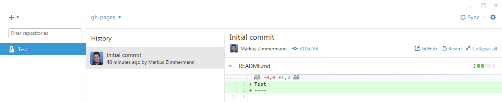

The GitHub client - a graphical user interface for Git
Here we will explain how you can setup and work with the GitHub client in 3 easy steps. However, there are alternative approaches. If you as a team are more comfortable using other types of interfaces to work with Git, feel free to use those.
Step 1: Create your local repository
After installing and logging in to GitHub, you are ready to work with the Windows/Mac Client of GitHub. To advance the usability of working with Git as online cloud memory with several addons, you usually won’t need any commands in this GUI. Below you‘ll find some views of the GitHub GUI in different modes. Start by cloning (press the icon) your group’s online repository and choose a folder, where you want your local workspace to be.
You’ll now find your local repository overview in the left menu:

This shelters all the additional functionalities, which GitHub provides. For example, you can now start editing the files in your working directory. Therefore right-click the repository and select Open in Explorer. There you can add files or edit the existing ones.
Step 2: Commit
Whenever a file is modified, you can create a commit (“snapshot” of your current project state). The GitHub client recognizes and summarizes the changes in the area "uncommitted changes", in the right area you will see all the changes in the files (and their differing content):
You simply need to enter some text which describes your modifications (important for your teammates, e.g. “Functionality X improved” or “Bug Y fixed”) and press the commit button:
Step 3: Push
Before your edit appears online, you also need to push your changes from your local repository to the online repository. Instead of pushing/pulling, GitHub offers a synchronization of the online and local repositories. Simply press the corresponding button: 
You can explore the different revisions (or “snapshots”) by clicking the different commits in your history. There you get a view of the differences (added/removed code for each file) and the possibility of reverting changes:
What if something goes wrong: Reverting and conflicts
Imagine you made a commit in the past and later on in your project you realize: this was not, what you wanted to do. Git simply gives you the possibility, to revert a single commit in the past: Select the commit, you want to revert (in the history). Press the button (this is only possible, if all pending changes where committed), you now have to commit/sync the revert.
If two (or more) persons modified a file simultaneously, this will result in a conflict which you need to resolve by merging. Github will amend the conflicting file with conflict markers: The marker for a starting conflict is <<<<<<<, while the end of the conflict is marked with >>>>>>. The two versions are separated by =======. Open the conflicting document with an editor of your choice (e.g. Brackets) and resolve the conflict by deleting the unwanted version and the markers. A file could look like this:
<<<<<<< HEAD Here is your change ======= Here is another conflicting change >>>>>>> origin/gh-pages
Once you resolved the conflict, commit the merged file (don't forget to select it by clicking in GitHub in the "Files to commit" area).
Hint: A good method to try to avoid merge conflicts is for each team member to work on separate pages or functionalities of the app (as long as this approach makes sense for your specific app).
Branches
There is a concept called “branches” in GitHub, those are used for allowing a parallel workflow of multiple application versions in big software projects. Basically, one would create a copy of the existing application (create a branch), improve the functionality (without altering the main project branch, called the master branch), and once the functionality is there, discuss it and finally merge it to the master branch.
For the interaction prototyping course, it’s sufficient if you stay in the master branch (for private documents like tests, presentations, evaluation, …) or in the gh-pages branch (for the development of your application, which then will be publically available in the internet). Keep in mind: the latter branch is publically available in the internet. You need to select the appropriate branch in the top bar of your GitHub client:
Ready, steady, go!
Find further information by reading the GitHub tutorials. Create an arbitrary HTML document in your cloned repository. Provoke a conflict: multiple authors are editing this HTML document and synchronizing changes. Try to resolve the conflicts by merging the edits. Try to revert to an earlier version.
Discuss with your tutors: What is a commit, a synchronization, and a branch?